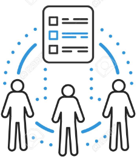

<!--
  Generated template for the GestionUsuariosPage page.

  See http://ionicframework.com/docs/components/#navigation for more info on
  Ionic pages and navigation.
-->
<ion-header>
  <ion-navbar color="navegador">
    <button ion-button icon-only menuToggle>
      <ion-icon name="menu"></ion-icon>
    </button>
    <ion-buttons end>
      <button (click)="salir()" ion-button icon-end>
        Salir

      </button>
    </ion-buttons>

    <ion-title>
      Control de usuarios
    </ion-title>

  </ion-navbar>
</ion-header>

<ion-content class="fondo">

  <h3>Elegir opcion</h3>
  <ion-grid>
    <ion-row>
      <ion-col  col-6 col-sm-4  col-md-3 col-lg-2 col-xl-1>
        <div class="divs"  (click)="abrirVentana('usuarios')">
          
          <h5>Alta de usuarios</h5>
        </div>
      </ion-col>
      <ion-col  col-6 col-sm-4  col-md-3 col-lg-2 col-xl-1>
        <div class="divs" (click)="abrirVentana('roles')">
          
          <h5>Alta roles de usuarios</h5>
        </div>
      </ion-col>
    </ion-row>
  </ion-grid>
  </ion-content>